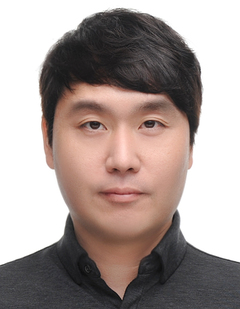
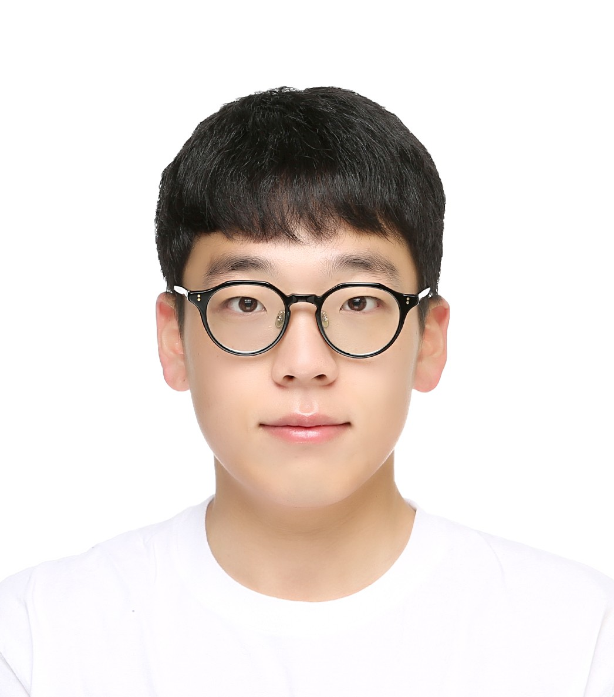
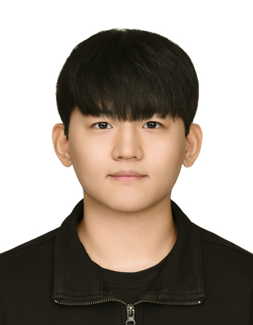

Professor Do Wan Kim
Department of Defense Systems Engineering, Sejong University
Research interests include nonlinear control, sampled-data control, autonomous marine vehicles, guidance and control, and defense unmanned systems.
Members
MUV Lab brings together a principal investigator, master's students, integrated M.S.–Ph.D. students, and research interns working across guidance, control, simulation, marine robotics, and defense AI.

Department of Defense Systems Engineering, Sejong University
Research interests include nonlinear control, sampled-data control, autonomous marine vehicles, guidance and control, and defense unmanned systems.

Integrated Master's–PhD Student
Fall 2025
Data-driven control, USV path following, and marine autonomy.

Incoming Integrated Master's–PhD Student
Spring 2026
Guidance, control, simulation, and autonomous marine systems.

Incoming Integrated Master's–PhD Student
Spring 2026
Sliding-mode control, barrier-function-based control, and disturbance rejection.
1 professor leading research in nonlinear control, guidance, marine autonomy, and defense unmanned systems.
2 master's students working on guidance, control, simulation, and marine unmanned system applications.
2 integrated graduate students working on long-term research tracks in marine autonomy and control.
1 undergraduate research intern participating in simulation, software, and project-based research activities.